Em uma frase: abri o programa de verdade na tela, no tamanho do notebook do Kaique (1280 × 657 pontos), tirei os prints que faltavam e conferi os achados "a conferir" do inventário com clique e tecla nativos: 6 dos 7 achados pedidos se confirmaram; o "salvar como (2)" está consertado, e apareceram dois defeitos novos que travam ou confundem o Kaique (a segunda gravação do mesmo livro não deixa processar sem escolher a pasta de novo; o cartão do livro nunca mostra "pronto, PDF gerado").
Todos os itens abaixo foram vistos por olho, na janela real, com print; os números (valor gravado no projeto, nome do erro) foram lidos por máquina ao lado, só para confirmar o que a tela mostrou. Ramo fase-1, commit 2ff2d90. Nenhum código, plano ou commit foi mexido.
Escala deste PC: Windows a 125 % (120 dpi), tela 1920 × 1080, área útil 1920 × 1020 pixels (= 1536 × 816 pontos).
Tamanho da janela: a moldura visível da janela foi posta em 1600 × 821 pixels = 1280 × 657 pontos (pontos = pixels ÷ 1,25), que é a área útil do notebook do Kaique a 150 %. A conta foi feita pela moldura que se vê (sem a borda invisível do Windows 11). O Qt confirmou a área de dentro em 1278 × 626 pontos (o resto é a barra de título). No notebook do Kaique o mesmo arranjo sai em 1920 × 985 pixels: a disposição é a mesma, as letras só ficam mais nítidas lá. Os prints têm 1600 × 821 pixels.
Sem atrapalhar o Samuel e sem tocar no acervo:
main.py do ramo fase-1), com pasta de dados própria (LOCALAPPDATA e a pasta do usuário trocadas para dados/ dentro desta pasta) e cópias montadas a partir das páginas-gabarito (livro A: 5 folhas duplas; livro C: 5 folhas de uma página). Os PDFs de saída foram gravados só em dados/saida/.Duas coisas que aprendi pilotando (valem para os próximos testes):
Como testei: livro C (5 folhas de uma página, com "Dividir folhas ao meio" ligado). A análise gerou a observação "este livro tem uma página por folha, não duas" (gravada no projeto). Procurei esse texto em todas as janelas visíveis, em todos os rótulos, botões e dicas do mouse, nas três abas: não aparece em lugar nenhum. O rótulo existe, com o texto, mas dentro de uma caixa escondida. No livro A, o contador escondido dizia "5 páginas para você olhar", e também não aparece.
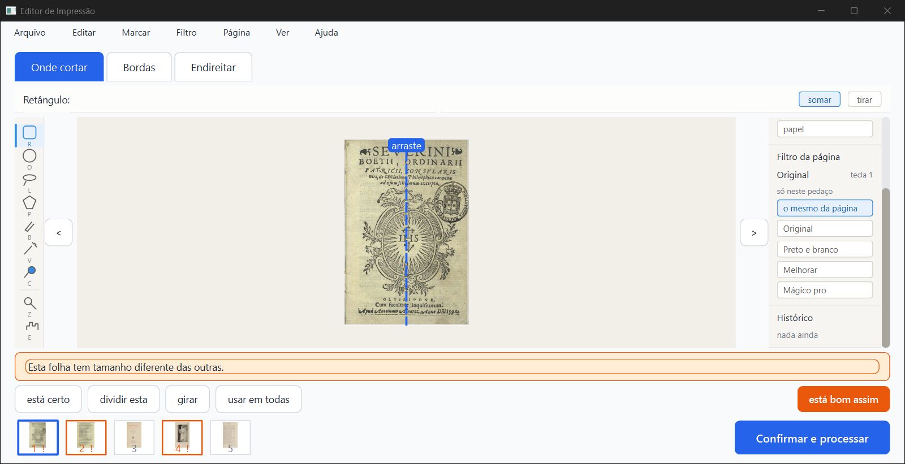
Como testei: em cada aba (Onde cortar, Bordas, Endireitar, Marcar, Filtro), apertei O e depois R (teclas nativas). Fiz isso com a janela inativa e repeti com ela ativa. Em todas as abas a barra de opções foi de "Oval:" para "Retângulo:", e o giro das 5 folhas continuou 0, 0, 0, 0, 0. Para controle, o botão "girar" girou a folha 1 para 90 graus (desfeito com Ctrl+Z).
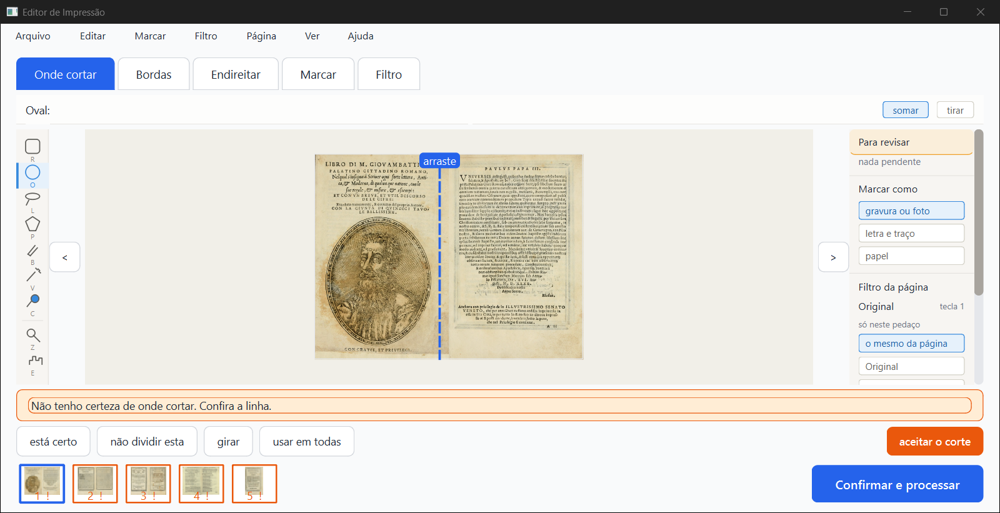
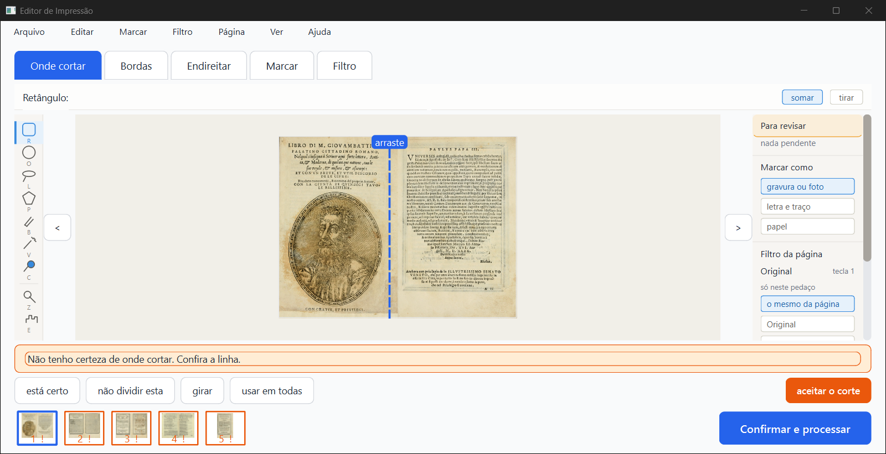
Como testei: livro C com "Limpar a folha" desmarcada (abas: Onde cortar, Bordas, Endireitar).
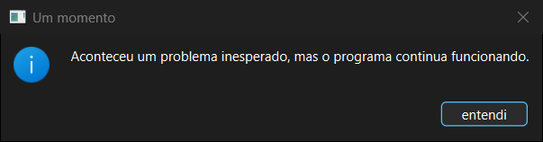
Linhas do erros.log (pasta de dados própria), uma de cada tipo:
===== 2026-10-02T21:01:49 | não tratado ===== (tecla R, mesma sessão do livro A)
File "ui\tela_conferir.py", line 2419, in tratar_tecla
File "ui\tela_conferir.py", line 390, in escolher_ferramenta
File "ui\widgets\editor_selecao.py", line 295, in definir_ferramenta
RuntimeError: Signal source has been deleted
===== 2026-10-02T21:02:23 | não tratado ===== (Marcar > Limpar tudo)
File "ui\tela_conferir.py", line 943, in _limpar_marcacao
File "ui\widgets\editor_selecao.py", line 287, in definir_selecao
RuntimeError: libshiboken: Internal C++ object (EditorSelecao) already deleted.
===== 2026-10-02T21:02:29 | não tratado ===== (Marcar > Deixar a folha em branco)
File "ui\tela_conferir.py", line 964, in _folha_em_branco
RuntimeError: libshiboken: Internal C++ object (EditorSelecao) already deleted.
===== 2026-10-02T21:02:35 | não tratado ===== (Marcar > Procurar de novo)
File "ui\tela_conferir.py", line 991, in _detectar_de_novo
File "ui\widgets\editor_selecao.py", line 343, in limpar_o_que_a_maquina_marcou
RuntimeError: Signal source has been deleted
===== 2026-10-02T21:03:59 | não tratado ===== (sessão nova, tecla R)
File "ui\tela_conferir.py", line 390, in escolher_ferramenta
AttributeError: 'TelaConferir' object has no attribute 'editor_selecao'
===== 2026-10-02T21:04:04 / 21:04:10 ===== (sessão nova, Limpar tudo / Deixar a folha em branco)
File "ui\tela_conferir.py", line 943 / 964
AttributeError: 'TelaConferir' object has no attribute 'editor_selecao'
No total foram 15 registros, todos deste teste: 9 letras, 3 itens do menu Marcar, e 3 da sessão nova.
Como testei: na aba Bordas, cada item escolhido pelo teclado do menu. Antes e depois de cada um, comparei o print inteiro (pixel por pixel) e o estado do programa: tela, aba, painéis visíveis, janelas abertas, páginas apagadas, erros.log.
| Item | O que aconteceu |
|---|---|
| Arquivo > "Livros recentes" | Submenu com 0 itens, mesmo com um livro aberto na sessão (a seta para a direita não abre nada) |
| Editar > "Mostrar o histórico" | Nada (print idêntico, estado igual) |
| Página > "Restaurar página apagada" | Página 1 apagada com Del; depois do item ela continuou apagada. Del de novo restaurou |
| Ver > "Aproximar", "Afastar", "Ajustar à tela" | Nada. As teclas Ctrl++ (numérico e do teclado), Ctrl+=, Ctrl+- e Ctrl+0 também não fazem nada, mesmo com a janela ativa |
| Ver > "Painel: Para revisar", "Painel: Marcar como", "Painel: Filtro da página", "Painel: Histórico" | A marca do menu some, o que prova que o item foi acionado, mas os quatro painéis continuam na tela |
| Ver > "Modo comparar" | A marca aparece, mas a tela não muda nada |
Nenhum desses itens gravou erro no erros.log. Os pares antes/depois estão em menus-antes-depois/.
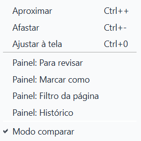
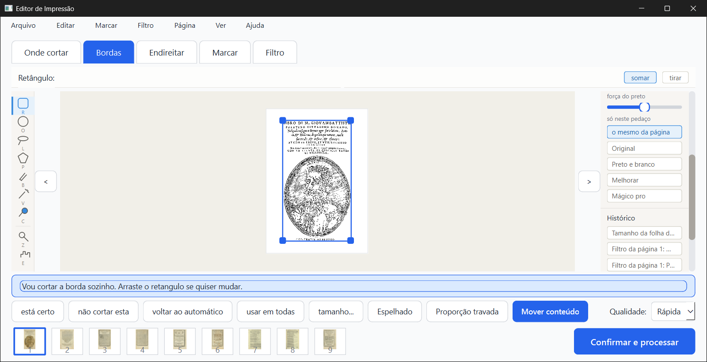
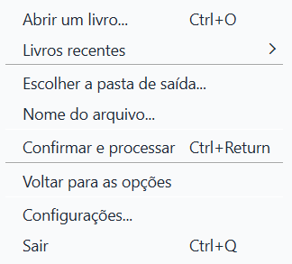
25d916e): NÃO CONFIRMADO, o conserto funcionaComo testei: gerei livro-teste-a - cadernos.pdf em dados/saida/ e anotei a impressão digital (sha256 867d37ec…, 27 187 249 bytes, e a data). Depois continuei o mesmo livro, gerei de novo com o mesmo nome e escolhi "salvar como livro-teste-a - cadernos (2).pdf". Resultado: chegou em "Ficou pronto!" com o nome (2), o (2).pdf tem 10 páginas como o primeiro, e o antigo ficou intacto (mesma impressão digital e mesma data). Nada no erros.log.
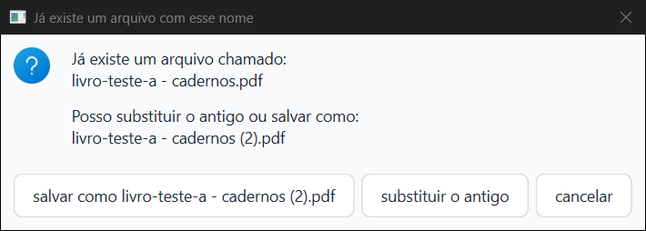
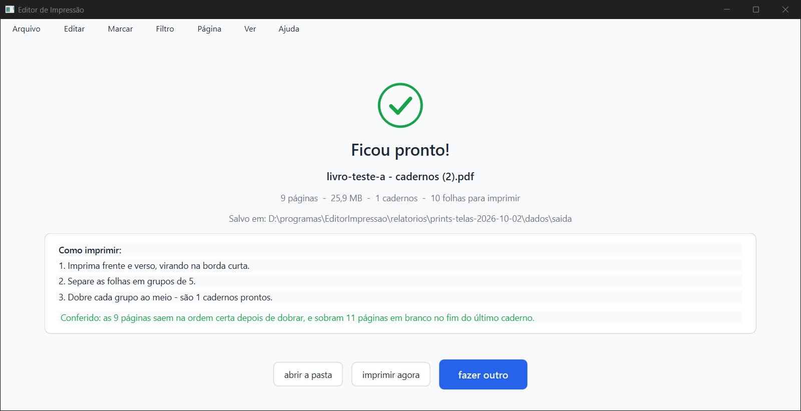
Para chegar nessa caixa tive de passar por um defeito novo (ver N1 abaixo).
Como testei: livro A com 5 páginas em dúvida.
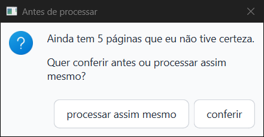
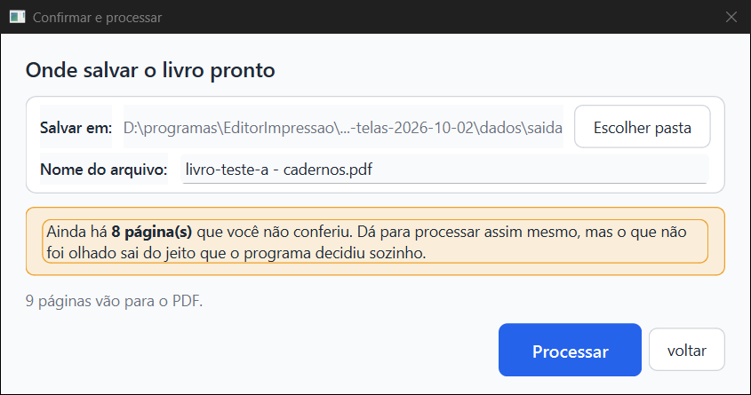
Como testei: página 1 em Preto e branco. Arrastei o cabo do deslizante "força do preto" do painel da direita (de 50 para cerca de 90) com o mouse nativo, e depois cliquei no trilho. O cabo nem acompanha o mouse: ele volta na hora para 50. O valor gravado continuou 50, e o Histórico não ganhou ação nenhuma. Para controle, o mesmo arrasto no deslizante do bloco "AJUSTE" da aba Filtro gravou 60 ("forte"), entrou no Histórico, e o do painel acompanhou. Desfiz com Ctrl+Z.
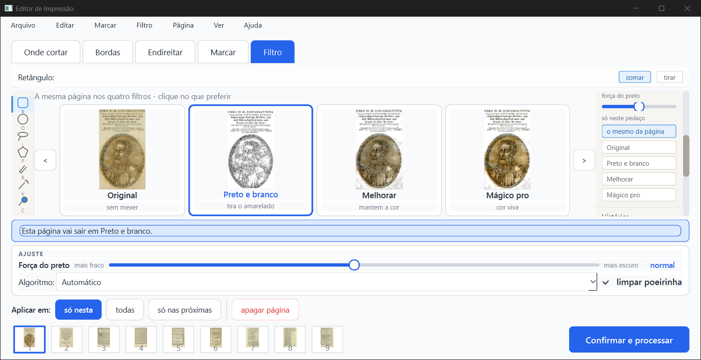
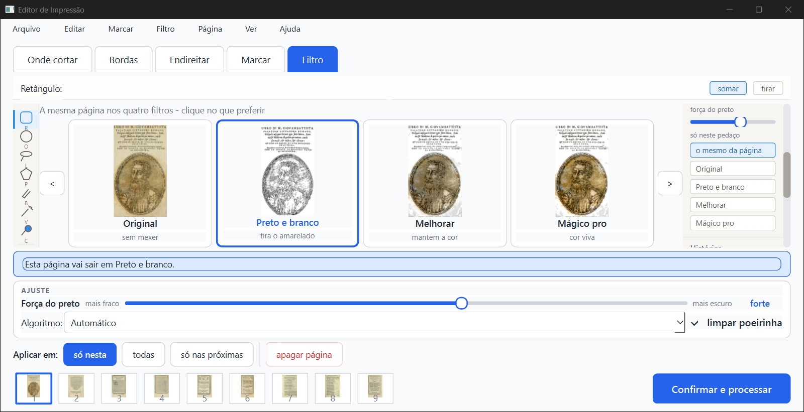
| Item (seção 4 do inventário) | Resultado |
|---|---|
| 7. A marca do menu Filtro não acompanha a página | CONFIRMADO. Página 1 em Preto e branco, nenhum item marcado no menu (print menu-filtro-sem-marca-pagina-em-preto-e-branco.png) |
| 11. Digitar um nome que já existe não acende a faixa laranja | CONFIRMADO. Digitei "livro-teste-a - cadernos.pdf" (que existe): aparece só a frase cinza pequena, sem a faixa laranja (print confirmar-nome-digitado-ja-existe.png). Trocando a pasta, a faixa acende (print confirmar-e-processar-depois-de-escolher-a-pasta-1280x657.png) |
| 14. Botão em inglês na "Lista de atalhos" (F1) | CONFIRMADO. "Show Details..." ao lado de "fechar" (print lista-de-atalhos-f1.png) |
| 12. Texto sem acento | Visto na tela: "Arraste o retangulo...", "girar na mao", "inclinacao: +0.0 graus", "mantem a cor" |
| 2. Botões "usar mais fraco" / "usar mais escuro" | Não testado. Não consegui uma página com o alerta "Ficou escura" ou "Texto quase sumiu" nos livros pequenos |
N1. Gerar o mesmo livro de novo trava a janela "Confirmar e processar" (grave para o Kaique). Na segunda vez, "Salvar em:" mostra o caminho do PDF antigo no lugar da pasta, aparece em vermelho "Esse caminho não é uma pasta.", e o botão "Processar" fica apagado. Só destrava escolhendo a pasta de novo em "Escolher pasta". Pela leitura do código, a janela recebe o caminho do arquivo onde espera uma pasta (ui/janela_confirmar.py, linha 57, destino.definir(projeto.caminho_saida ...); o caminho_saida guarda o arquivo inteiro, ver ui/janela_principal.py linha 944).
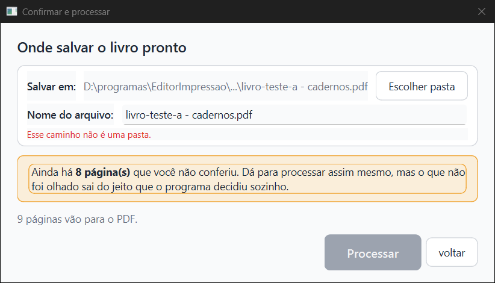
N2. O cartão do livro nunca mostra "pronto, PDF gerado" nem o botão "abrir a pasta". Depois de gerar o PDF (duas vezes), o cartão continua "1 de 9 conferidas" com "continuar". No resumo.json do projeto, pdf_gerado ficou false. No código, nada põe esse valor em verdadeiro (só um script de prints e um teste).
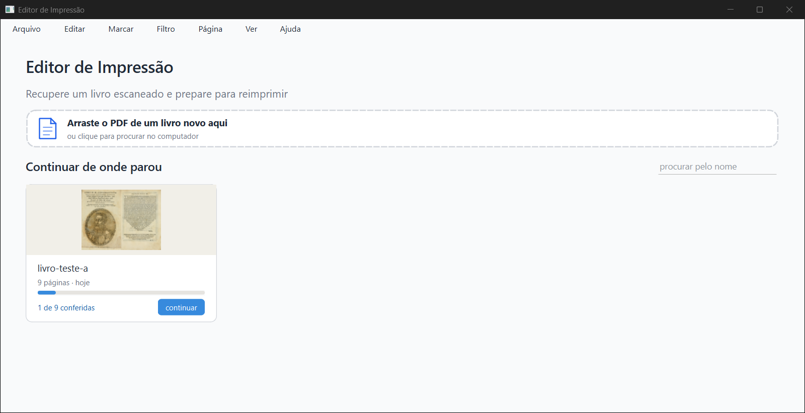
N3. Aba Filtro: uma vez, o bloco "AJUSTE" sumiu (altura zero) e os botões "Aplicar em" ficaram sem texto. Aconteceu logo depois de trocar a página de Original para Preto e branco com a tecla 2, com a aba Filtro aberta, na primeira vez em que o bloco apareceu. Aconteceu também com a janela maior (1536 × 816). Voltou ao normal ao trocar de aba. Tentei repetir (teclas 1, 2, 3) e não consegui. Na mesma hora, o cartão "Original" ficou mais de 30 s em "preparando...". Prints: painel-filtro-deslizante-arrastando-1280x657.png e referencia-conferir-filtro-preto-e-branco-1536x816-maximizada-neste-pc.png.
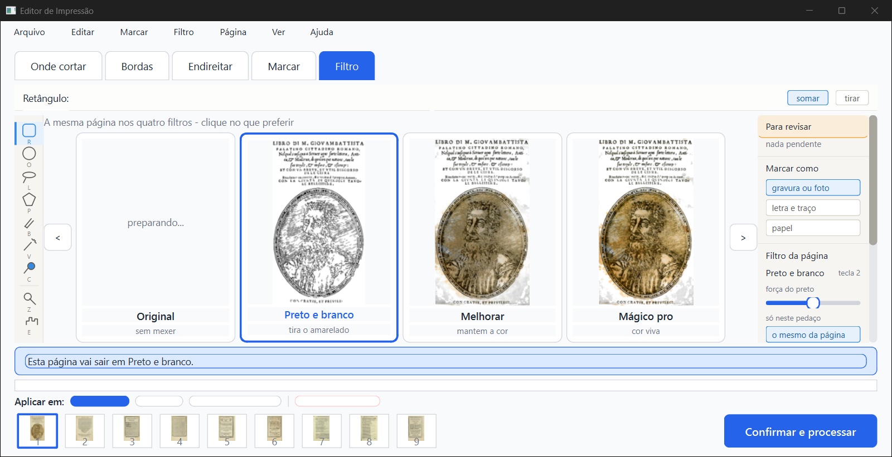
N4. "Tamanho da folha" já abre com o aviso laranja errado. A janela abre com o tamanho igual ao corte (11,41 × 18,70 cm) e já avisa "Esse tamanho é menor que o corte que você já fez (11.4 × 18.7 cm)". O número do aviso usa ponto, e o dos campos usa vírgula. Print tamanho-da-folha-1280x657.png.
N5. Painel "Para revisar" diz "nada pendente" com 5 folhas em dúvida. Na aba Onde cortar, as 5 miniaturas estavam laranja com "!", e a faixa dizia "Não tenho certeza de onde cortar". O contador escondido dizia "5 páginas para você olhar", mas o painel ficou em "nada pendente". Print conferir-onde-cortar-1280x657.png.
N6. Nomes de tecla em inglês em Configurações e no menu: "Left", "Right", "Space", "Tab", "Ctrl+Return", "Del". Prints configuracoes-1280x657.png, configuracoes-rolada-1280x657.png, menu-arquivo-livros-recentes.png.
N7. A caixa "Aconteceu um problema inesperado" sai com fundo preto (tema escuro do Windows), diferente do resto do programa, que é claro.
N8. Tela "Pronto": "1 cadernos" e "são 1 cadernos prontos" (plural errado). Ao lado de "Separe as folhas em grupos de 5", o "10 folhas para imprimir" pode confundir. O PDF imposto tem 10 páginas, então o número parece contar páginas do PDF e não folhas de papel.
N9. Dois avisos que se contradizem: a faixa da janela "Confirmar e processar" diz "Se continuar, ele será substituído", mas a caixa seguinte oferece "salvar como (2)" como padrão. Na mesma janela, "Antes de processar" fala em "5 páginas que eu não tive certeza" e a faixa em "8 página(s) que você não conferiu": são duas contas diferentes, e o Kaique pode achar que uma está errada.
N10. A 1280 × 657, a trilha de ferramentas não cabe: na aba Marcar some o "E" (Mão), e com o bloco AJUSTE aberto na aba Filtro ela corta depois do "C". O painel da direita só mostra "Para revisar", "Marcar como" e o começo de "Filtro da página"; o resto precisa de rolagem.
N11. Fora da conferência, os menus desligados não parecem desligados. "Editar", "Marcar", "Filtro" e "Página" estão desligados na tela inicial e em "O que fazer", mas têm o mesmo tom de preto que "Arquivo" (medido no print: tom 42 nos dois casos). O inventário diz que "aparecem apagados".
relatorios/prints-telas-2026-10-02/, abertos e olhados um por um)| Arquivo | Tela | O que mostra |
|---|---|---|
inicio-vazia-1280x657.png |
Tela inicial | Sem nenhum livro |
inicio-com-cartao-1280x657.png |
Tela inicial | Cartão do livro A depois de gerar o PDF (ainda "continuar", N2) |
inicio-com-dois-cartoes-1280x657.png |
Tela inicial | Dois cartões (sessão nova) |
o-que-fazer-1280x657.png |
O que fazer | De fábrica, livro A |
o-que-fazer-rolada-cadernos-1280x657.png |
O que fazer | Rolada até o fim, "Montar cadernos" marcado |
o-que-fazer-livro-c-sem-limpar-1280x657.png |
O que fazer | Livro C com "Limpar a folha" desmarcada |
folhear-o-livro-1280x657.png |
Folhear o livro | No tamanho do Kaique |
folhear-o-livro-maximizada-neste-pc-1536x816.png |
Folhear o livro | Como abre aqui (maximizada neste PC), só de referência |
progresso-olhando-o-livro-1280x657.png |
Progresso | "Olhando o livro..." |
progresso-processando-o-livro-1280x657.png |
Progresso | "Processando o livro..." |
conferir-onde-cortar-1280x657.png |
Conferir, Onde cortar | Linha da lombada, alerta, "Para revisar" com "nada pendente" (N5) |
conferir-bordas-1280x657.png |
Conferir, Bordas | Retângulo verde, "Mover conteúdo" apagado |
conferir-bordas-folha-a5-1280x657.png |
Conferir, Bordas | Depois de escolher A5: "Mover conteúdo" aceso |
conferir-bordas-mover-conteudo-ligado-1280x657.png |
Conferir, Bordas | "Mover conteúdo" ligado: página na folha branca, contorno azul |
conferir-bordas-mover-conteudo-arrastando-1280x657.png |
Conferir, Bordas | No meio do arrasto, com a linha-guia laranja |
conferir-bordas-mover-conteudo-depois-de-arrastar-1280x657.png |
Conferir, Bordas | Depois de soltar (conteúdo à direita) |
conferir-endireitar-1280x657.png |
Conferir, Endireitar | Linhas laranja, "inclinacao" sobreposto no alto |
conferir-marcar-1280x657.png |
Conferir, Marcar | Marcas pintadas, trilha cortada (N10) |
conferir-filtro-1280x657.png |
Conferir, Filtro | Página em Original (sem AJUSTE) |
conferir-filtro-preto-e-branco-1280x657.png |
Conferir, Filtro | Preto e branco com o AJUSTE normal |
referencia-conferir-filtro-preto-e-branco-1536x816-maximizada-neste-pc.png |
Conferir, Filtro | AJUSTE espremido mesmo em janela maior (N3) |
conferir-livro-c-sem-aba-marcar-1280x657.png |
Conferir (livro C) | Só 3 abas; a observação do livro não aparece (a) |
tecla-o-antes-do-r-na-aba-onde-cortar-1280x657.png |
Conferir | Tecla O: "Oval:" na aba Onde cortar (b) |
tecla-r-na-aba-onde-cortar-1280x657.png |
Conferir | Tecla R: "Retângulo:", folha não girou (b) |
painel-filtro-deslizante-antes-1280x657.png |
Conferir, Filtro | Painel rolado até o deslizante, valor 50 (g) |
painel-filtro-deslizante-arrastando-1280x657.png |
Conferir, Filtro | Arrastando: o cabo não sai do 50; AJUSTE espremido (g, N3) |
painel-filtro-deslizante-depois-de-soltar-1280x657.png |
Conferir, Filtro | Depois de soltar: continua 50 (g) |
controle-ajuste-deslizante-grava-1280x657.png |
Conferir, Filtro | Controle: o AJUSTE grava 60, "forte" (g) |
tamanho-da-folha-1280x657.png |
Tamanho da folha | Como abre, com o aviso laranja (N4) |
tamanho-da-folha-a5-1280x657.png |
Tamanho da folha | Depois de clicar A5 |
configuracoes-1280x657.png |
Configurações | Início da lista de atalhos |
configuracoes-rolada-1280x657.png |
Configurações | Fim da lista ("Del", "Ctrl++"...) |
antes-de-processar-1280x657.png |
Antes de processar | Pelo botão (f) |
antes-de-processar-pelo-ctrl-enter-janela-inativa.png |
Antes de processar | Ctrl+Enter com a janela inativa (ressalva de (f)) |
ctrl-enter-janela-ativa-abre-direto-confirmar-e-processar.png |
Confirmar e processar | Ctrl+Enter com a janela ativa: sem a caixa (f) |
confirmar-e-processar-1280x657.png |
Confirmar e processar | Primeira gravação |
confirmar-e-processar-arquivo-ja-existe-1280x657.png |
Confirmar e processar | Segunda vez: "Esse caminho não é uma pasta." (N1) |
confirmar-e-processar-depois-de-escolher-a-pasta-1280x657.png |
Confirmar e processar | Depois de "Escolher pasta": faixa "Já existe" acesa |
confirmar-nome-digitado-ja-existe.png |
Confirmar e processar | Nome digitado que já existe: sem faixa laranja (item 11) |
ja-existe-um-arquivo-com-esse-nome-1280x657.png |
Já existe um arquivo | As três opções (e) |
pronto-1280x657.png |
Pronto | "Ficou pronto!" com cadernos |
pronto-depois-de-salvar-como-2-1280x657.png |
Pronto | Com o nome "(2)" (e) |
menu-arquivo-livros-recentes.png |
Menu Arquivo | "Livros recentes" com submenu vazio (d) |
menu-filtro-sem-marca-pagina-em-preto-e-branco.png |
Menu Filtro | Nenhum item marcado (item 7) |
menu-ver-paineis-desmarcados-mas-paineis-na-tela.png |
Menu Ver | Painéis desmarcados, comparar marcado (d) |
menu-ver-paineis-desmarcados-tela.png |
Conferir, Bordas | No mesmo momento, os painéis na tela (d) |
controle-menu-ir-para-a-pagina.png |
Ir para a página | Controle: item de menu escolhido pelo teclado abre |
lista-de-atalhos-f1.png |
Lista de atalhos | "Show Details..." em inglês |
sem-aba-marcar-tecla-r-caixa-de-erro.png |
Um momento | Tecla R sem a aba Marcar (c) |
sem-aba-marcar-tecla-r-caixa-de-erro-sessao-nova.png |
Um momento | Mesma coisa na sessão nova (c) |
sem-aba-marcar-marcar-limpar-tudo-caixa.png |
Um momento | Marcar > Limpar tudo (c) |
sem-aba-marcar-marcar-deixar-a-folha-em-branco-caixa.png |
Um momento | Marcar > Deixar a folha em branco (c) |
sem-aba-marcar-marcar-procurar-de-novo-caixa.png |
Um momento | Marcar > Procurar de novo (c) |
menus-antes-depois/ (21 arquivos) |
Conferir, Bordas/Filtro | Antes e depois de cada item de menu de (d) e das teclas de zoom. Todos os pares são iguais pixel por pixel, menos o "Restaurar página apagada", em que a página continua "apagada" |
Telas sem print: "Ver de perto" (não foi pedida); as caixas "Fundo separado", "Começar de novo?", "Tirar da lista?" e "Renomear" (fora do pedido).
Documentos\Editor de Impressao) mudou às 20:51:45, sem nenhum arquivo novo nem apagado (os PDFs de lá são de julho). Minha instância tinha a pasta do usuário trocada para dados/home, que ficou vazia, e nesse horário eu não estava em nenhuma janela de salvar. O mais provável é a conferência "dá para gravar nesta pasta?" (cria e apaga um arquivo temporário), rodada pelos testes do outro agente, que corriam ao mesmo tempo. Fica registrado, sem afirmar.relatorios/prints-telas-2026-10-02/prints-e-conferencia-na-janela.html (e .pdf, .md).relatorios/prints-telas-2026-10-02/scripts/.dados/ (pasta de dados própria, cópias de livros e PDFs gerados) foi apagada no fim.Editor de Impressão · gerado em 02/10/2026 às 21:10